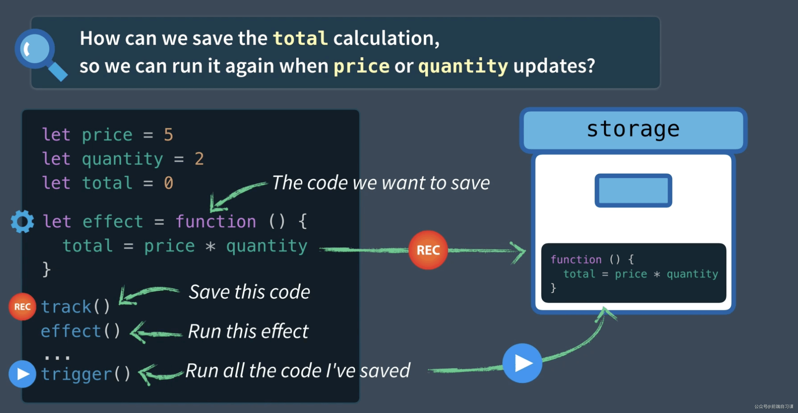
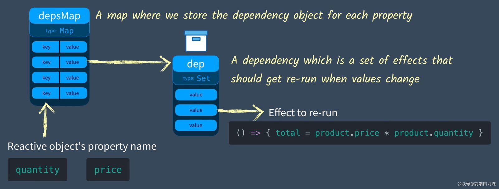
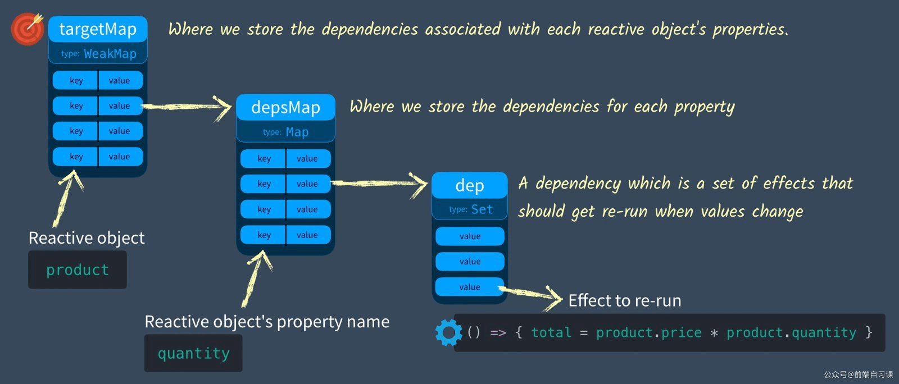
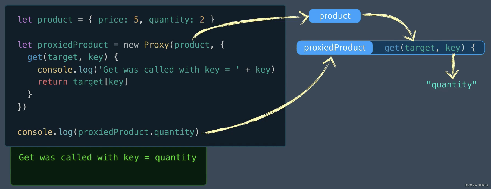
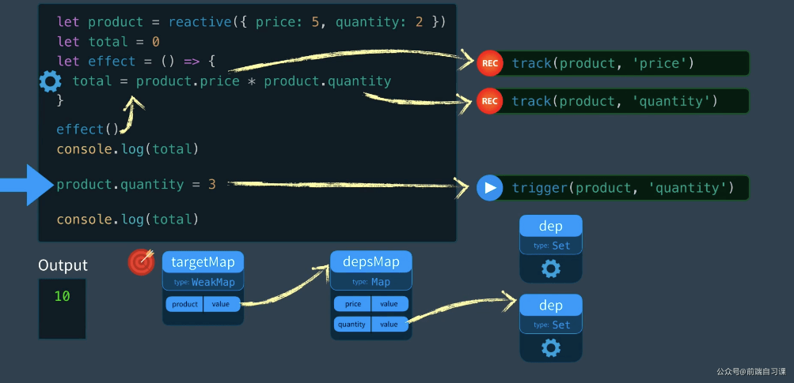
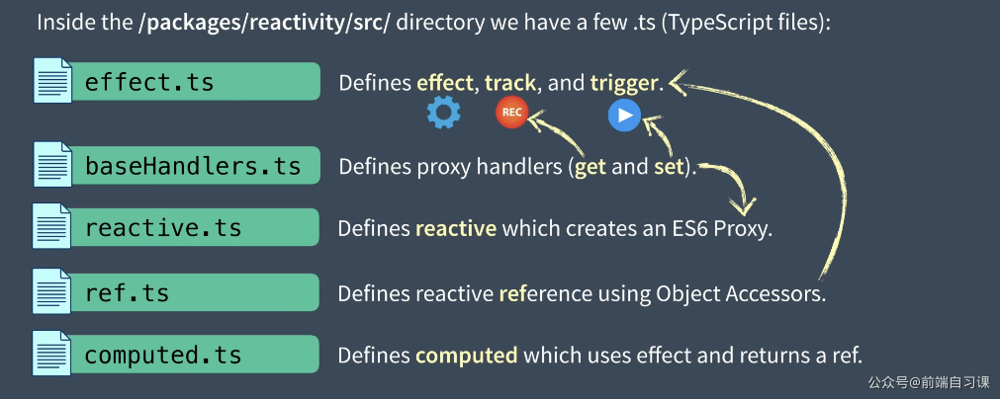

说说 vue3 中的响应式设计原理
参考答案
Vue 3 中的响应式原理可谓是非常之重要，通过学习 Vue3 的响应式原理，不仅能让我们学习到 Vue.js 的一些设计模式和思想，还能帮助我们提高项目开发效率和代码调试能力。
一、Vue 3 响应式使用
1. Vue 3 中的使用
当我们在学习 Vue 3 的时候，可以通过一个简单示例，看看什么是 Vue 3 中的响应式：
<!-- HTML 内容 -->
<div id="app">
<div>Price: {{price}}</div>
<div>Total: {{price * quantity}}</div>
<div>getTotal: {{getTotal}}</div>
</div>const app = Vue.createApp({ // ① 创建 APP 实例
data() {
return {
price: 10,
quantity: 2
}
},
computed: {
getTotal() {
return this.price * this.quantity * 1.1
}
}
})
app.mount('#app') // ② 挂载 APP 实例通过创建 APP 实例和挂载 APP 实例即可，这时可以看到页面中分别显示对应数值：<br>
当我们修改 price 或 quantity 值的时候，页面上引用它们的地方，内容也能正常展示变化后的结果。这时，我们会好奇为何数据发生变化后，相关的数据也会跟着变化，那么我们接着往下看。
2. 实现单个值的响应式
在普通 JS 代码执行中，并不会有响应式变化，比如在控制台执行下面代码：
let price = 10, quantity = 2;
const total = price * quantity;
console.log(`total: ${total}`); // total: 20
price = 20;
console.log(`total: ${total}`); // total: 20从这可以看出，在修改 price 变量的值后， total 的值并没有发生改变。
那么如何修改上面代码，让 total 能够自动更新呢？我们其实可以将修改 total 值的方法保存起来，等到与 total 值相关的变量（如 price 或 quantity 变量的值）发生变化时，触发该方法，更新 total 即可。我们可以这么实现：
let price = 10, quantity = 2, total = 0;
const dep = new Set(); // ①
const effect = () => { total = price * quantity };
const track = () => { dep.add(effect) }; // ②
const trigger = () => { dep.forEach( effect => effect() )}; // ③
track();
console.log(`total: ${total}`); // total: 0
trigger();
console.log(`total: ${total}`); // total: 20
price = 20;
trigger();
console.log(`total: ${total}`); // total: 40上面代码通过 3 个步骤，实现对 total 数据进行响应式变化：
① 初始化一个 Set 类型的 dep 变量，用来存放需要执行的副作用（ effect 函数），这边是修改 total 值的方法；
② 创建 track() 函数，用来将需要执行的副作用保存到 dep 变量中（也称收集副作用）；
③ 创建 trigger() 函数，用来执行 dep 变量中的所有副作用；
在每次修改 price 或 quantity 后，调用 trigger() 函数执行所有副作用后， total 值将自动更新为最新值。<br>

（图片来源：Vue Mastery）
3. 实现单个对象的响应式
通常，我们的对象具有多个属性，并且每个属性都需要自己的 dep。我们如何存储这些？比如：
let product = { price: 10, quantity: 2 };从前面介绍我们知道，我们将所有副作用保存在一个 Set 集合中，而该集合不会有重复项，这里我们引入一个 Map 类型集合（即 depsMap ），其 key 为对象的属性（如： price 属性）， value 为前面保存副作用的 Set 集合（如： dep 对象），大致结构如下图：

<br>（图片来源：Vue Mastery）实现代码：
let product = { price: 10, quantity: 2 }, total = 0;
const depsMap = new Map(); // ①
const effect = () => { total = product.price * product.quantity };
const track = key => { // ②
let dep = depsMap.get(key);
if(!dep) {
depsMap.set(key, (dep = new Set()));
}
dep.add(effect);
}
const trigger = key => { // ③
let dep = depsMap.get(key);
if(dep) {
dep.forEach( effect => effect() );
}
};
track('price');
console.log(`total: ${total}`); // total: 0
effect();
console.log(`total: ${total}`); // total: 20
product.price = 20;
trigger('price');
console.log(`total: ${total}`); // total: 40上面代码通过 3 个步骤，实现对 total 数据进行响应式变化：
① 初始化一个 Map 类型的 depsMap 变量，用来保存每个需要响应式变化的对象属性（key 为对象的属性， value 为前面 Set 集合）；
② 创建 track() 函数，用来将需要执行的副作用保存到 depsMap 变量中对应的对象属性下（也称收集副作用）；
③ 创建 trigger() 函数，用来执行 dep 变量中指定对象属性的所有副作用；
这样就实现监听对象的响应式变化，在 product 对象中的属性值发生变化， total 值也会跟着更新。
4. 实现多个对象的响应式
如果我们有多个响应式数据，比如同时需要观察对象 a 和对象 b 的数据，那么又要如何跟踪每个响应变化的对象？
这里我们引入一个 WeakMap 类型的对象，将需要观察的对象作为 key ，值为前面用来保存对象属性的 Map 变量。代码如下：
let product = { price: 10, quantity: 2 }, total = 0;
const targetMap = new WeakMap(); // ① 初始化 targetMap，保存观察对象
const effect = () => { total = product.price * product.quantity };
const track = (target, key) => { // ② 收集依赖
let depsMap = targetMap.get(target);
if(!depsMap){
targetMap.set(target, (depsMap = new Map()));
}
let dep = depsMap.get(key);
if(!dep) {
depsMap.set(key, (dep = new Set()));
}
dep.add(effect);
}
const trigger = (target, key) => { // ③ 执行指定对象的指定属性的所有副作用
const depsMap = targetMap.get(target);
if(!depsMap) return;
let dep = depsMap.get(key);
if(dep) {
dep.forEach( effect => effect() );
}
};
track(product, 'price');
console.log(`total: ${total}`); // total: 0
effect();
console.log(`total: ${total}`); // total: 20
product.price = 20;
trigger(product, 'price');
console.log(`total: ${total}`); // total: 40上面代码通过 3 个步骤，实现对 total 数据进行响应式变化：
① 初始化一个 WeakMap 类型的 targetMap 变量，用来要观察每个响应式对象；
② 创建 track() 函数，用来将需要执行的副作用保存到指定对象（ target ）的依赖中（也称收集副作用）；
③ 创建 trigger() 函数，用来执行指定对象（ target ）中指定属性（ key ）的所有副作用；
这样就实现监听对象的响应式变化，在 product 对象中的属性值发生变化， total 值也会跟着更新。
大致流程如下图：

<br>（图片来源：Vue Mastery）二、Proxy 和 Reflect
在上一节内容中，介绍了如何在数据发生变化后，自动更新数据，但存在的问题是，每次需要手动通过触发 track() 函数搜集依赖，通过 trigger() 函数执行所有副作用，达到数据更新目的。
这一节将来解决这个问题，实现这两个函数自动调用。
1. 如何实现自动操作
这里我们引入 JS 对象访问器的概念，解决办法如下：
- 在读取（GET 操作）数据时，自动执行
track()函数自动收集依赖； - 在修改（SET 操作）数据时，自动执行
trigger()函数执行所有副作用；
那么如何拦截 GET 和 SET 操作？接下来看看 Vue2 和 Vue3 是如何实现的：
- 在 Vue2 中，使用 ES5 的
Object.defineProperty()函数实现； - 在 Vue3 中，使用 ES6 的
Proxy和ReflectAPI 实现；
需要注意的是：Vue3 使用的 Proxy 和 Reflect API 并不支持 IE。
Object.defineProperty() 函数这边就不多做介绍，可以阅读文档，下文将主要介绍 Proxy 和 Reflect API。
2. 如何使用 Reflect
通常我们有三种方法读取一个对象的属性：
- 使用
.操作符：leo.name； - 使用
[]：leo['name']； - 使用
ReflectAPI：Reflect.get(leo, 'name')。
这三种方式输出结果相同。
3. 如何使用 Proxy
Proxy 对象用于创建一个对象的代理，从而实现基本操作的拦截和自定义（如属性查找、赋值、枚举、函数调用等）。语法如下：
const p = new Proxy(target, handler)参数如下：
- target : 要使用 Proxy 包装的目标对象（可以是任何类型的对象，包括原生数组，函数，甚至另一个代理）。
- handler : 一个通常以函数作为属性的对象，各属性中的函数分别定义了在执行各种操作时代理
p的行为。
我们通过官方文档，体验一下 Proxy API：
let product = { price: 10, quantity: 2 };
let proxiedProduct = new Proxy(product, {
get(target, key){
console.log('正在读取的数据：',key);
return target[key];
}
})
console.log(proxiedProduct.price);
// 正在读取的数据： price
// 10这样就保证我们每次在读取 proxiedProduct.price 都会执行到其中代理的 get 处理函数。其过程如下：

<br>（图片来源：Vue Mastery）然后结合 Reflect 使用，只需修改 get 函数：
get(target, key, receiver){
console.log('正在读取的数据：',key);
return Reflect.get(target, key, receiver);
}输出结果还是一样。
接下来增加 set 函数，来拦截对象的修改操作：
let product = { price: 10, quantity: 2 };
let proxiedProduct = new Proxy(product, {
get(target, key, receiver){
console.log('正在读取的数据：',key);
return Reflect.get(target, key, receiver);
},
set(target, key, value, receiver){
console.log('正在修改的数据：', key, ',值为：', value);
return Reflect.set(target, key, value, receiver);
}
})
proxiedProduct.price = 20;
console.log(proxiedProduct.price);
// 正在修改的数据： price ,值为： 20
// 正在读取的数据： price
// 20这样便完成 get 和 set 函数来拦截对象的读取和修改的操作。为了方便对比 Vue 3 源码，我们将上面代码抽象一层，使它看起来更像 Vue3 源码：
function reactive(target){
const handler = { // ① 封装统一处理函数对象
get(target, key, receiver){
console.log('正在读取的数据：',key);
return Reflect.get(target, key, receiver);
},
set(target, key, value, receiver){
console.log('正在修改的数据：', key, ',值为：', value);
return Reflect.set(target, key, value, receiver);
}
}
return new Proxy(target, handler); // ② 统一调用 Proxy API
}
let product = reactive({price: 10, quantity: 2}); // ③ 将对象转换为响应式对象
product.price = 20;
console.log(product.price);
// 正在修改的数据： price ,值为： 20
// 正在读取的数据： price
// 20这样输出结果仍然不变。
4. 修改 track 和 trigger 函数
通过上面代码，我们已经实现一个简单 reactive() 函数，用来将普通对象转换为响应式对象。但是还缺少自动执行 track() 函数和 trigger() 函数，接下来修改上面代码：
const targetMap = new WeakMap();
let total = 0;
const effect = () => { total = product.price * product.quantity };
const track = (target, key) => {
let depsMap = targetMap.get(target);
if(!depsMap){
targetMap.set(target, (depsMap = new Map()));
}
let dep = depsMap.get(key);
if(!dep) {
depsMap.set(key, (dep = new Set()));
}
dep.add(effect);
}
const trigger = (target, key) => {
const depsMap = targetMap.get(target);
if(!depsMap) return;
let dep = depsMap.get(key);
if(dep) {
dep.forEach( effect => effect() );
}
};
const reactive = (target) => {
const handler = {
get(target, key, receiver){
console.log('正在读取的数据：',key);
const result = Reflect.get(target, key, receiver);
track(target, key); // 自动调用 track 方法收集依赖
return result;
},
set(target, key, value, receiver){
console.log('正在修改的数据：', key, ',值为：', value);
const oldValue = target[key];
const result = Reflect.set(target, key, value, receiver);
if(oldValue != result){
trigger(target, key); // 自动调用 trigger 方法执行依赖
}
return result;
}
}
return new Proxy(target, handler);
}
let product = reactive({price: 10, quantity: 2});
effect();
console.log(total);
product.price = 20;
console.log(total);
// 正在读取的数据： price
// 正在读取的数据： quantity
// 20
// 正在修改的数据： price ,值为： 20
// 正在读取的数据： price
// 正在读取的数据： quantity
// 40
<br>（图片来源：Vue Mastery）三、activeEffect 和 ref
在上一节代码中，还存在一个问题： track 函数中的依赖（ effect 函数）是外部定义的，当依赖发生变化， track 函数收集依赖时都要手动修改其依赖的方法名。
比如现在的依赖为 foo 函数，就要修改 track 函数的逻辑，可能是这样：
const foo = () => { /**/ };
const track = (target, key) => { // ②
// ...
dep.add(foo);
}那么如何解决这个问题呢？
1. 引入 activeEffect 变量
接下来引入 activeEffect 变量，来保存当前运行的 effect 函数。
let activeEffect = null;
const effect = eff => {
activeEffect = eff; // 1. 将 eff 函数赋值给 activeEffect
activeEffect(); // 2. 执行 activeEffect
activeEffect = null;// 3. 重置 activeEffect
}然后在 track 函数中将 activeEffect 变量作为依赖：
const track = (target, key) => {
if (activeEffect) { // 1. 判断当前是否有 activeEffect
let depsMap = targetMap.get(target);
if (!depsMap) {
targetMap.set(target, (depsMap = new Map()));
}
let dep = depsMap.get(key);
if (!dep) {
depsMap.set(key, (dep = new Set()));
}
dep.add(activeEffect); // 2. 添加 activeEffect 依赖
}
}使用方式修改为：
effect(() => {
total = product.price * product.quantity
});这样就可以解决手动修改依赖的问题，这也是 Vue3 解决该问题的方法。完善一下测试代码后，如下：
const targetMap = new WeakMap();
let activeEffect = null; // 引入 activeEffect 变量
const effect = eff => {
activeEffect = eff; // 1. 将副作用赋值给 activeEffect
activeEffect(); // 2. 执行 activeEffect
activeEffect = null;// 3. 重置 activeEffect
}
const track = (target, key) => {
if (activeEffect) { // 1. 判断当前是否有 activeEffect
let depsMap = targetMap.get(target);
if (!depsMap) {
targetMap.set(target, (depsMap = new Map()));
}
let dep = depsMap.get(key);
if (!dep) {
depsMap.set(key, (dep = new Set()));
}
dep.add(activeEffect); // 2. 添加 activeEffect 依赖
}
}
const trigger = (target, key) => {
const depsMap = targetMap.get(target);
if (!depsMap) return;
let dep = depsMap.get(key);
if (dep) {
dep.forEach(effect => effect());
}
};
const reactive = (target) => {
const handler = {
get(target, key, receiver) {
const result = Reflect.get(target, key, receiver);
track(target, key);
return result;
},
set(target, key, value, receiver) {
const oldValue = target[key];
const result = Reflect.set(target, key, value, receiver);
if (oldValue != result) {
trigger(target, key);
}
return result;
}
}
return new Proxy(target, handler);
}
let product = reactive({ price: 10, quantity: 2 });
let total = 0, salePrice = 0;
// 修改 effect 使用方式，将副作用作为参数传给 effect 方法
effect(() => {
total = product.price * product.quantity
});
effect(() => {
salePrice = product.price * 0.9
});
console.log(total, salePrice); // 20 9
product.quantity = 5;
console.log(total, salePrice); // 50 9
product.price = 20;
console.log(total, salePrice); // 100 18思考一下，如果把第一个 effect 函数中 product.price 换成 salePrice 会如何：
effect(() => {
total = salePrice * product.quantity
});
effect(() => {
salePrice = product.price * 0.9
});
console.log(total, salePrice); // 0 9
product.quantity = 5;
console.log(total, salePrice); // 45 9
product.price = 20;
console.log(total, salePrice); // 45 18得到的结果完全不同，因为 salePrice 并不是响应式变化，而是需要调用第二个 effect 函数才会变化，也就是 product.price 变量值发生变化。
代码地址：<br>https://github.com/Code-Pop/vue-3-reactivity/blob/master/05-activeEffect.js
2. 引入 ref 方法
熟悉 Vue3 Composition API 的朋友可能会想到 Ref，它接收一个值，并返回一个响应式可变的 Ref 对象，其值可以通过 value 属性获取。
ref：接受一个内部值并返回一个响应式且可变的 ref 对象。ref 对象具有指向内部值的单个 property .value。
官网的使用示例如下：
const count = ref(0)
console.log(count.value) // 0
count.value++
console.log(count.value) // 1我们有 2 种方法实现 ref 函数：
- 使用
reactive函数
const ref = intialValue => reactive({value: intialValue});这样是可以的，虽然 Vue3 不是这么实现。
- 使用对象的属性访问器（计算属性）
const ref = raw => {
const r = {
get value(){
track(r, 'value');
return raw;
},
set value(newVal){
raw = newVal;
trigger(r, 'value');
}
}
return r;
}使用方式如下：
let product = reactive({ price: 10, quantity: 2 });
let total = 0, salePrice = ref(0);
effect(() => {
salePrice.value = product.price * 0.9
});
effect(() => {
total = salePrice.value * product.quantity
});
console.log(total, salePrice.value); // 18 9
product.quantity = 5;
console.log(total, salePrice.value); // 45 9
product.price = 20;
console.log(total, salePrice.value); // 90 18在 Vue3 中 ref 实现的核心也是如此。
代码地址：<br>https://github.com/Code-Pop/vue-3-reactivity/blob/master/06-ref.js
四、实现简易 Computed 方法
用过 Vue 的同学可能会好奇，上面的 salePrice 和 total 变量为什么不使用 computed 方法呢？
没错，这个可以的，接下来一起实现个简单的 computed 方法。
const computed = getter => {
let result = ref();
effect(() => result.value = getter());
return result;
}
let product = reactive({ price: 10, quantity: 2 });
let salePrice = computed(() => {
return product.price * 0.9;
})
let total = computed(() => {
return salePrice.value * product.quantity;
})
console.log(total.value, salePrice.value);
product.quantity = 5;
console.log(total.value, salePrice.value);
product.price = 20;
console.log(total.value, salePrice.value);这里我们将一个函数作为参数传入 computed 方法，computed 方法内通过 ref 方法构建一个 ref 对象，然后通过 effct 方法，将 getter 方法返回值作为 computed 方法的返回值。
这样我们实现了个简单的 computed 方法，执行效果和前面一样。
五、源码学习建议
1. 构建 reactivity.cjs.js
这一节介绍如何去从 Vue 3 仓库打包一个 Reactivity 包来学习和使用。
准备流程如下：
- 从 Vue 3 仓库下载最新 Vue3 源码；
git clone https://github.com/vuejs/vue-next.git- 安装依赖：
yarn install- 构建 Reactivity 代码：
yarn build reactivity- 复制 reactivity.cjs.js 到你的学习 demo 目录：
上一步构建完的内容，会保存在 packages/reactivity/dist目录下，我们只要在自己的学习 demo 中引入该目录的 reactivity.cjs.js 文件即可。
- 学习 demo 中引入：
const { reactive, computed, effect } = require("./reactivity.cjs.js");2. Vue3 Reactivity 文件目录
在源码的 packages/reactivity/src目录下，有以下几个主要文件：
- effect.ts：用来定义
effect/track/trigger； - baseHandlers.ts：定义 Proxy 处理器（ get 和 set）；
- reactive.ts：定义
reactive方法并创建 ES6 Proxy； - ref.ts：定义 reactive 的 ref 使用的对象访问器；
- computed.ts：定义计算属性的方法；

<br>（图片来源：Vue Mastery）Vue 3 的响应式系统通过使用 Proxy 和 Reflect API，以及引入 activeEffect 和 ref 方法，实现了对数据变化的自动追踪和更新。
Vue 3 的响应式系统主要包括以下几个核心概念：
- Proxy：使用 Proxy 对象来拦截对象的读取和修改操作，通过定义 get 和 set 方法来实现对数据变化的自动追踪。
- Reflect：通过 Reflect API 来实现对对象属性的读取和修改操作，提供了与
Object.defineProperty类似的功能，但更加强大和灵活。 - activeEffect：一个全局变量，用于保存当前正在执行的 effect 函数，以便在追踪依赖时使用。
- ref：将普通值转换为响应式可变的 ref 对象，其值可以通过
.value属性访问和修改。